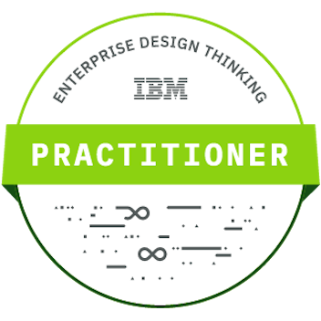

Senior Ruby Developer / Cloud Technology Specialist
Emil Oszmánbegovity

- website: emilosman.com
- email: hello@emilosman.com
- github: emilosman
- linkedin: in/emilosman
Summary
Focused creative problem solver, working in software development since 2016.
Specialized in Ruby development and cloud technologies.
Skilled communicator with in-depth technical knowledge.
Tech skills
- Ruby, Rails
- JavaScript, TypeScript, React, Next.js
- PostgreSQL, MongoDB
- Refactoring
- Test Driven Development
- Git, Version Control
- HTML5, CSS3, SCSS
- Agile Development Practices
- Software Architecture Patterns and Pattern Languages
- Microservices Architecture
- Virtualization, Hyper-V
- Containerization, Docker, k8s
- CI/CD, GitHub Actions, Automation
- Linux and Unix systems
- Scripting in Bash, Go, Ruby, Python
Soft Skills
- Excellent written and spoken English
- Willingness to share knowledge and mentor juniors
- Comfortable communicating with clients
- Managerial experience
- Diligent note-taker and archivist
- Passion for learning and continuous improvement
- Systems thinking
- Performing highly open-ended and conscientious work
- Hungarian and Serbian native speaker
Experience
Senior Ruby Developer - OSMAN EMIL KFT
December 2022 to present
Full-time Ruby developer working on freelance projects.
Clients include:
- Beeple
(Antwerp, Belgium)Rails backend developer at startup helping companies schedule temp workers. - CoverWallet
(Madrid, Spain)Software engineer in the insurance industry with exposure to complex cloud systems. Wrote integrations for APIs of multiple insurance companies.
Tech used: Google Cloud Platform, k8s, Microservices, Ruby
Technical Architect - MentorMate
March 2022 to November 2022 - Sofia, Bulgaria
Projects:
- Mapping of existing on-premise architecture and working closely with DevOps specialists and Technical Architects to create hybrid deployments on Azure.
- Conducted deep interviews with key technical personnel to assess software stacks, maintenance, security and encryption, finances and spending, and regulatory compliance.
- Consulted on greenfield projects taking into account client's functional and non-functional requirements.
Responsibilities:
- Creating technical and solution architectures
- Facilitating client communication and meetings
- Generating architecture diagrams
- Composing documentation and delivering presentations
- Communicating effectively with both technical and non-technical stakeholders
- Collaborating with Designers, Business Analysts, and Project Managers across various departments
Senior Ruby Developer - MentorMate
November 2020 to November 2022 - Sofia, Bulgaria
Backend Ruby on Rails developer handling both core application features and custom client enhancements and integrations.
Taking on leadership roles and mentoring junior developers and bootcampers.
Full-stack Web Developer - Sideqik
November 2018 to March 2020 - Atlanta, USA
Worked full-stack in a startup environment, developing an influencer marketing platform.
Responsibilities:
- Frontend Overhaul - Contributed to migration of frontend from Rails server-side rendering / Spine.js to Ember, then used Ember to build and document a component library and accelerate future development.
- Major Features - Contributed to the frontend and backend development of: 1-on-1 and bulk messaging with merge tags, let customers do much more of their marketing process without leaving the app • Ember, Rails, Gmail API, Twitter DM API, SMTP
Web Developer - aac.digital
July 2017 to October 2018 - Budapest, Hungary
Full-time Rails developer. Worked on projects for clients like METRO, Telenor, Jamie Oliver, BRF S.A., Zsidai Group. Learned the Ember.js frontend framework.
Freelance Web Developer
November 2016 to July 2017
Started professional career building Ruby on Rails applications. Worked with the Hungarian company aac.digital as a freelancer. Roles on projects included frontend and backend development.
Open-Source Code
November 2016 to present
I publish my open-source work on GitHub: emilosman
Personal Projects and Experiments
Various projects meant to make life easier with automation and data analysis.
Some open-source, some closed-source, most for fun.
View my projects here.
Study Notes
I publish my study notes online.
I do this as proof of work and to potentially inspire others to do their own research.
Topics covered: Programming, Design, Linux, Tooling, etc.
Read my notes here.
Education and Certification
I continually strive to advance my knowledge with industry standard resources.
- Microsoft Certified: Azure Fundamentals
- IBM: Enterprise Design Thinking Practitioner
- My Microsoft Learn profile
- Actively pursuing: AWS Certified Developer - Associate - DVA-C02

